사회조사분석사-2급 (2002-08-11 기출문제)
1과목: 조사방법론 I
1. 다음 중에서 사회조사의 결과를 이용하여 추정된 단순회귀모형을 종합적으로 평가하는데 고려하여야 할 요인이 아닌 것은?
- 예측값의 표준오차
- 결정계수(決定係數)
- 회귀계수
- 가중평균값
(정답률: 46%)

2. 사회과학에서 척도를 사용하는 이유로 가장 옳지 않은 것은?
- 어렵고 복합적인 개념을 하나의 지표로 측정가능
- 변수에 대한 양적 측정치를 제공함으로 통계적 조작 가능
- 여러개의 지표를 하나의 점수로 나타내어 자료를 단순화 함
- 척도는 양적인 속성을 질적인 계열로도 전환 가능
(정답률: 65%)
3. 사례조사연구의 특징은 무엇을 주요한 목적으로 생각 하는가?
- 명제나 가설의 검증
- 연구대상에 대한 기술과 탐구
- 분석단위의 파악
- 연구결과에 대한 일반화
(정답률: 60%)
4. 다음 중 캠프벨과 스탠리(Campbell & Stanley)가 언급한 외적타당도의 저해요인이 아닌 것은?
- 실험 처치와 피험자 편견의 상호작용효과
- 실험적 배치의 반동효과
- 여러번 실험처치 할 경우 간섭효과
- 측정치의 극단치가 평균으로 이동하는 효과
(정답률: 40%)
5. 다음 중 사전검사(시험조사;pretest)의 목적으로 가장 타당하지 않은 것은?
- 설문지의 확정
- 실제조사관리의 사전점검
- 사후조사결과와 비교
- 조사업무량의 조정
(정답률: 54%)
6. 질문지의 문항배열과 관련하여 적절하지 않은 것은?
- 시작하는 질문은 가벼운 것으로 한다.
- 질문은 논리적인 순서로 배열하는 것이 좋다.
- 사생활에 관한 것이나 민감한 질문은 가급적 뒤로 돌린다.
- 특수한 것을 먼저 질문하고 일반적인 것은 뒤로 돌리는 것이 좋다.
(정답률: 69%)
7. 어떤 회사의 기획실 직원이 그 회사 사원들의 직업만족도를 측정하기 위해서 몇가지의 설문문항들을 작성하여 그의 동료 직원들에게 보여서 그가 측정하려고 하는바를 빠짐없이 모두 다 포함시켰는지를 확인한다면, 다음 중 가장 적절한 설명은?
- 신뢰도를 확보하는 일이다.
- 내용타당도를 확보하는 일이다.
- 기준관련타당도를 확보하는 일이다.
- 내적신뢰도를 확보하는 일이다.
(정답률: 알수없음)
8. 면접조사에서 응답내용의 신빙성을 저해하는 최근정보효과 (recency effect)를 정확하게 설명하고 있는 것은?
- 최근정보효과는 주로 질문지(questionnaire)를 사용하는 사회조사에서 보다는 조사표(interview schedule)를 사용하는 면접조사에서 자주 발생한다.
- 무학이나 저학력 응답자들은 아무리 최근에 입수한 주요한 정보와 직결된 내용일지라도 어려운 질문 내용은 잘 이해 할 수 없어 조사의 실효성을 감소시킨다.
- 무학이나 저학력 응답자들은 면접 직전에 면접자로부터 접하게 된 면접자의 생각이나 조언을 거의 무비판적으로 따라서 응답하는 경향이 짙다.
- 무학이나 저학력 응답자들은 제일 먼저 들었던 응답내용을 그 다음에 들은 응답내용에 비해 훨씬 정확하게 기억하게 된다.
(정답률: 알수없음)
9. 다음의 질문방식은 어디에 속하는가?
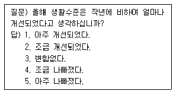
- 이분형 질문(dichotomous questions)
- 평정형 질문(rating questions)
- 서열형 질문(ranking questions)
- 해당자 질문(contingency questions)
(정답률: 50%)
10. 다음 중 내용분석의 중요특징과 거리가 먼 것은?
- 내용분석은 메시지를 그 분석 대상으로 한다.
- 내용분석은 문헌연구의 일종이다.
- 내용분석은 양적분석 방법만 사용한다.
- 내용분석은 메시지의 현재적 내용뿐만 아니라 잠재적 내용도 그 분석 대상으로 하고 있다.
(정답률: 90%)
11. 측정의 수준에 따라 사용할 수 있는 통계기법이 달라지는데 다음 중 측정의 수준과 사용 가능한 기술통계(descriptive statistics)를 잘 못 짝지은 것은?
- 명목 수준 - 중간값(median)
- 서열 수준 - 범위(range)
- 등간 수준 - 최빈값(mode)
- 비율 수준 - 표준편차(standard deviation)
(정답률: 60%)
12. 통제집단 사후측정 실험설계가 통제집단 사전사후측정 실험설계보다 좋은 점은?
- 무작위 추출과 관련된 문제를 피할 수 있다.
- 무작위 할당과 관련된 문제를 피할 수 있다.
- 측정 반응성(measurement reactivity)과 관련된 문제를 피할 수 있다.
- 무작위 추출 및 무작위 할당과 관련된 문제를 모두피할 수 있다.
(정답률: 67%)
13. 관찰조사의 장점이 아 닌 것은?
- 현재상태를 가장 생생하게 기록할 수 있다.
- 자기보고(Self-reporting)를 하기 어려운 경우에 이용이 가능하다.
- 피조사자의 태도에 관계없이 조사가 가능하다.
- 조사자가 직접 관찰하게 되므로 관찰의 신뢰성과 타당성이 높다.
(정답률: 알수없음)
14. 다음 중 비확률표본추출(nonprobability sampling)의 방법은?
- 단순무작위표본추출(simple random sampling)
- 할당표본추출(quota sampling)
- 계통표본추출(systematic sampling)
- 층화표본추출(stratified sampling)
(정답률: 93%)
15. 할당표본추출(quota sampling)의 단점은?
- 무작위표본추출보다 비용이 많이 든다.
- 일반화가 어렵고 표본오차가 커질 가능성이 높다.
- 신속한 결과를 원할 때 사용이 불가능하다.
- 각 집단을 적절히 대표하게 하는 층화의 효과가 없다.
(정답률: 28%)
16. 설문지의 표지문(cover letter)에 포함될 내용으로 적합하지 않 은 것은?
- 연구의 목적
- 연구의 중요성
- 연구의 예상결과
- 연구의 주관기관
(정답률: 91%)
17. 다음 중에서 틀 린 내용은?
- 정부의 교육 정책에 대한 지지도는 서열척도(ordinal scale)나 비율척도(ratio scale)로 측정해 볼 수 있다.
- IQ는 등간척도(interval scale)로 측정하는 것이다.
- 좋아하는 정당을 선택하라는 질문은 명목척도(nominal scale)로 측정하는 것이 적절하다.
- 가구당 소득은 비율척도(ratio scale)로 측정하는 것이 적절하다.
(정답률: 37%)
18. 중소기업 사장들의 중국계 외국인 노동자에 대한 친숙도를 조사하려고 한다. 어떤 척도법을 사용하는 것이 좋은가?
- 소시오메트리
- 평정척도법
- 보가더스 척도법
- Q-기법
(정답률: 알수없음)
19. 다음 중 표본틀(sampling frame)을 평가하는 주요요소가 아닌 것은?
- 포괄성(comprehensiveness)
- 추출확률(probability of selection)
- 효율성(efficiency)
- 안정성(stability)
(정답률: 42%)
20. 조사자가 소수의 응답자 집단에게 특정 주제에 대하여 토론케 한 다음 필요한 정보를 알아내는 자료수집방법은?
- 현지조사법(field survey)
- 비지시적 면접(nondirective interview)
- 표적집단면접(focus group interview)
- 델파이 서베이(delphi survey)
(정답률: 60%)
21. 다음 중 계통표본추출(Systematic sampling)의 설명으로 가장 적절한 것은?
- A지역인구를 5명씩, B지역인구를 역시 5명씩 표집한다.
- 주소록에 등재된 이름을 등재순서에 따라 매 5번째 이름마다 표집한다.
- 출석부에 기재된 학생 50명중 5번부터 35번까지 모두 표집한다.
- 신장에 따라서 순서대로 등재되어 있는 징병대상 청년들을 10명씩 표집한다.
(정답률: 알수없음)
22. 각 문항이 척도상의 어디에 위치할 것인가를 평가자들로 하여금 판단케 한 다음 조사자가 이를 바탕으로 하여 적절한 문항들을 선정하여 척도를 구성하는 방법은?
- 서스톤척도(Thurston scale)
- 리커트척도(Likert scale)
- 거트만척도(Guttman scale)
- 의미분화척도(Semantic differential scale)
(정답률: 43%)
23. 실험실내(laboratory) 실험방법과 비교하여 현지(field) 실험방법이 가지는 장점은?
- 내적 타당성(Internal validity)
- 외적 타당성(External validity)
- 개념 타당성(Construct validity)
- 신뢰성(reliability)
(정답률: 60%)
24. 현직 대통령에 대한 인기도를 0점에서 100점까지의 값 가운데 하나를 선택하도록 했다.(높은 수치일수록 높은 지지) 갑은 30점을 준 반면 을은 60점을 주었다. 갑과 을의 평가에 대해 다음 중 적절한 것은?
- 을은 갑보다 2배만큼 현직 대통령을 더욱 더 지지한다.
- 갑이 을보다 2배만큼 현직 대통령을 더욱 더 지지한다.
- 을이 더 지지하지만 그 차이가 2배라고 할 수 없다.
- 갑과 을의 평가를 비교할 수 없다.
(정답률: 70%)
25. 다음은 연구의 모형에 관한 여러 진술들이다. 이 중 적합한 것은?
- 연역적 방법은 탐색적 연구에, 귀납적 방법은 가설 검정에 주로 사용한다.
- 연역적 방법은 우선 관찰을 통해 자료를 수집하고 이를 정리· 분석하여 일반적인 유형을 찾아내고 이것으로부터 잠정적인 결론에 도달하는 것이다.
- 귀납적 방법은 이론으로부터 가설을 설정하고 가설의 내용을 현실세계에서 관찰한 다음, 관찰에서 얻는 자료가 어느 정도 가설에 부합되는가를 판단하여 가설의 채택여부를 결정짓는 방법이다.
- 실제 연구과정에서는 연역적 방법과 귀납적 방법이 엄밀히 구분된다기보다는 상호보완적인 하나의 고리를 이루고 있다.
(정답률: 알수없음)
26. 다음의 특성을 가진 연구방법은?
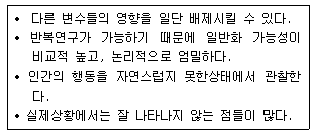
- 참여관찰(participant observation)
- 실험(experiment)
- 내용분석(contents analysis)
- 조사연구(survey research)
(정답률: 70%)
27. 다음의 설명 중 잘못된 것은?
- 일반적으로 자기기입식 설문조사는 면접설문조사보다 비용이 적게 들고 시간이 덜 걸린다.
- 자기기입식 설문조사는 익명성이 보장되기 때문에 면접설문조사보다 민감한 쟁점을 다루는데 유리하다.
- 자기기입식 설문조사는 면접설문조사보다 복잡한 쟁점을 다루는데 더 효과적이다.
- 면접설문조사에서는 면접원이 질문에 대한 대답 외에도 중요한 관찰을 할 수 있다.
(정답률: 알수없음)
28. 독립변수와 종속변수가 모두 명목척도(nominal scale)일 경우에 적합한 통계기법은?
- 카이자승
- 분산분석
- 회귀분석
- 군집분석
(정답률: 알수없음)
29. 한 변수(X)가 다른 변수(Y)에 시간적으로나 이론적으로 선행하면서 그 변수(X)의 변화가 다른 변수(Y)의 변화에 영향을 미칠 때 그 변수(X)는 무엇인가?
- 종속변수
- 내생변수
- 독립변수
- 피설명변수
(정답률: 80%)
30. 경험적 연구를 위한 작업가설의 요건으로 틀린 것은?
- 명료해야 한다.
- 연구자의 주관이 분명해야 한다.
- 특정화되어 있어야 한다.
- 검정가능한 것이어야 한다.
(정답률: 50%)
2과목: 조사방법론 II
31. 어떤 연구가 부적절한 표본틀(Sampling frame)을 사용하여 얻은 자료를 바탕으로 이루어졌다면, 그 연구결과는?
- 대표성을 결여하게 된다.
- 이론적인 적절성이 결여된다.
- 정확한 가설을 설정하기 어렵다.
- 정확한 측정을 어렵게 한다.
(정답률: 알수없음)
32. 부자(父子)간 계층이동 연구시 가장 적절한 질문은?
- 귀하 아버지께서 하시는 일은 무엇입니까?
- 귀하 아버지의 직업은 무엇입니까?
- 귀하 아버지의 직업과 소득은?
- 귀하가 16세 때 아버지의 직업은 무엇이었습니까?
(정답률: 39%)
33. 다음 중 단순무작위표본추출(simple random sampling)에 대한 설명 중 틀린 것은?
- 단순무작위표본추출의 경우, 연구자는 모집단(population) 내의 요소(element)들이 표본으로 선택될 확률을 알 수 있다.
- 단순무작위표본추출의 경우, 표본오차(sampling error)의 크기를 계산할 수 있다.
- 단순무작위표본추출의 경우, 표본의 크기(sample size)는 중요하지 않다.
- 단순무작위표본추출은 확률표본추출(probability sampling)의 대표적인 방법 중의 하나이다.
(정답률: 알수없음)
34. 스피어만-브라운(Spearman-Brown) 공식은 어느 경우에 주로 사용되는가?
- 동형검사 신뢰도 추정
- 반분신뢰도로 전체 신뢰도 추정
- 범위의 축소로 인한 예언타당도에 대한 교정
- Kuder-Richardson 신뢰도 추정
(정답률: 47%)
35. 집락표본추출(cluster sampling)에 대한 다음의 설명 중 틀린 것은?
- 확률표본추출(Probability sampling)의 하나로서, 표본오차의 크기를 계산할 수 있다.
- 완전한 표본틀(sampling frame)이 없는 경우에도 사용 가능하며, 비교적 비용이 적게 든다는 장점이 있기 때문에, 전국 규모의 조사에 많이 사용된다.
- 집락내에서는 동질성이 크고 집락간에는 이질성이 크도록 집락을 설정하면, 표본오차(sampling error)와 조사 비용을 동시에 줄일 수 있다.
- 조사자의 필요에 따라서는 집락을 2개 이상의 단계에서 설정할 수도 있다.
(정답률: 알수없음)
36. 응답자의 교육수준(학력)에 따라 응답편향(bias)이 가장 크게 나타나는 자료수집방법은?
- 면접조사
- 전화조사
- 우편조사
- 집단조사
(정답률: 알수없음)
37. 다음 국민의식조사의 질문은 어떤 점에 문제가 있는가?
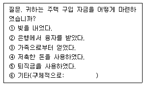
- 간결성
- 명확성
- 상호배제성
- 포괄성
(정답률: 67%)
38. 실험설계(experimental design)의 인과관계 분석을 위협하는 요소들이 아 닌 것은?
- 검사효과(testing effects)
- 사후검사(post-test)
- 성숙(maturation) 또는 시간의 경과
- 실험대상의 탈락
(정답률: 70%)
39. 다음 중 내적타당도와 외적타당도를 저해하는 대부분의 요소들을 통제할 수 있다는 점에서 효용성이 매우 높은 실험설계는?
- 고전적 실험
- 솔로몬 4집단설계
- 통제집단 후 비교설계
- 통제집단 전후 비교설계
(정답률: 57%)
40. 보다 동질적인 층으로부터는 비교적 적은 수의 표본을 뽑고, 다소 이질적인 층으로부터는 보다 많은 표본을 뽑음으로써 결과적으로 최소 규모의 표본으로 정확성을 유지할 수 있도록 하는 추출방법은?
- 비례배분(proportional allocation)
- 최적분배(optimum allocation)
- 데밍분배(deming allocation)
- 네이만분배(neyman allocation)
(정답률: 알수없음)
41. 대면적 면접조사(face-to-face interview)가 지니는 장점과 거리가 가장 먼 것은?
- 응답률이 높다.
- 조사 경비를 줄일 수 있다.
- 신뢰성 있는 응답을 얻을 수 있다.
- 문항에 대한 답변 이외의 정보도 얻을 수 있다.
(정답률: 86%)
42. 다음 중 틀 린 것은?
- 신뢰도는 타당성의 충분조건이다.
- 측정오차는 체계적오차(systematic error)와 무작위 오차(random error)로 나눌 수 있다.
- 체계적오차는 타당성과 관련되어 있다.
- 무작위오차는 신뢰도와 관련되어 있다.
(정답률: 알수없음)
43. 개념의 구성요소가 아닌 것은?
- 일반적 합의
- 정확한 정의
- 가치 중립성
- 경험적 준거틀
(정답률: 알수없음)
44. 사회조사에서 비확률표본추출(nonprobability sampling)이 많이 사용되는 이유는?
- 표본추출오차가 작게 나타난다.
- 모집단에 대한 추정이 용이하다.
- 표본설계가 용이하고 시간과 비용을 절약할 수 있다.
- 모집단 본래의 특성과 일정량 이상은 차이가 나지 않는 결과를 얻을 수 있다.
(정답률: 39%)
45. 각 대학교의 졸업생들을 중심으로 취업률을 조사하였을 때 척도의 수준으로 맞는 것은?
- 수학적 계산이 불가능하다.
- 덧셈과 뺄셈만이 가능하다.
- 곱셈과 나눗셈만이 가능하다.
- 덧셈, 뺄셈, 곱셈, 나눗셈 모두 가능하다.
(정답률: 알수없음)
46. 명목척도(nominal scale)의 논리적 특성은 한 범주 내에 있는 모든 대상이 등가성(equivalence)을 지니고 있다는점이다. 이러한 등가성에 대한 기호적 표현이 아닌 것은?
- A=A
- A=B 이면 B=A이다.
- A＞B 이면 B는 A보다 크지 않다.
- A=B이고, B=C이면 A=C 이다.
(정답률: 알수없음)
47. 사회경제적 지위를 측정하기 위해 응답자의 직업, 소득 및 교육수준을 지표로 사용하는 경우에 척도의 타당도 (validity)를 평가하는 방법은?
- 구성체타당도(construct validity)
- 표면타당도(face validity)
- 기준관련타당도(criterion-related validity)
- 내용타당도(content validity)
(정답률: 50%)
48. 4년제 대학교 대학생집단을 학년과 성, 계열별(인문계, 자연계, 예체능계)로 구분하여 할당표본추출을 할 경우 할당표는 총 몇 개의 범주로 구분되어지는가?
- 3개
- 5개
- 12개
- 24개
(정답률: 알수없음)
49. 온라인(on-line)조사의 장점이 아닌 것은?
- 모집단의 대표성
- 조사의 신속성
- 조사비용의 경제성
- 분석의 용이성
(정답률: 69%)
50. 다음에 예시된 척도는 무슨 척도인가?
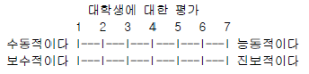
- 서스톤척도(Thurston scale)
- 리커트척도(Likert scale)
- 거트만척도(Guttman scale)
- 의미분화척도(Semantic differential scale)
(정답률: 알수없음)
51. 다음 중 신뢰도의 구체적 평가방법으로 적절하지 않은 것은?
- 재조사법(test-retest method)
- 사전조사법(pretest method)
- 반분법(split-halves method)
- 내적 일치도법(internal consistency method)
(정답률: 알수없음)
52. 광범위한 개인의 감정이나 생활경험을 알아보고자 할 경우 많이 활용하는 조사방법은?
- 집중면접(focused interview)
- 임상면접(clinical interview)
- 비지시적 면접(nondirective interview)
- 구조적 면접(structured interview)
(정답률: 24%)
53. 다음 중 폐쇄형 질문(closed-ended questions)의 특성이 아닌 것은?
- 응답자에게 창의적인 자기표현의 기회를 줄 수 있다.
- 질문에 대한 대답이 표준화되어 있기 때문에 비교가 가능하다.
- 밝히기를 주저하거나 사생활과 관련되는 민감한 주제에 보다 적합하다.
- 부호화(coding)와 분석이 용이하여 시간과 경비를 절약할 수 있다.
(정답률: 알수없음)
54. 다음은 참여관찰(Participant observation)을 통해 자료를 수집하려고 할 때 조사자가 취할 수 있는 태도이다. 이 중 가장 객관성을 유지하기 어려운 것은?
- 완전한 참여자
- 관찰자로서의 참여자
- 참여자로서의 관찰자
- 완전한 관찰자
(정답률: 50%)
55. 다음 각 용어의 설명이 맞게 짝지어진 것은?
- 표면타당도(face validity): 모집단의 특성이 수많은 질문문항과 지표를 통해서 과연 얼마나 모집단의 특성을 잘 대표해 주고 있는가를 말한다.
- 내용타당도(content validity): 특정의 기호를 이루고 있는 이론 구성이 과연 타당한가에 대한 내용이다.
- 기준관련타당도(criterion-related validity): 경험적 타당도 또는 예시적 타당도라고도 한다.
- 구성타당도(construct validity): 지표의 타당도가 단순한 연구자의 주관에 따라 확보된 경우를 말한다.
(정답률: 47%)
56. 질적조사방법과 양적조사방법의 차이점에 관한 설명 중 틀린 것은?
- 양적방법은 관찰자로부터 독립된 객관적 현상이 존재한다고 보는데 비하여 질적방법은 그렇지 않다.
- 양적방법은 현상의 결과적 측면에 주력한다면 질적방법은 현상의 과정적 측면을 이해하려 주력한다.
- 양적방법은 조사절차가 유연하고 객관적이지만 질적방법은 그렇지 못하다.
- 양적방법은 일반화(generalization)를 위해 노력하지만 질적방법은 그렇지 않다.
(정답률: 알수없음)
57. 표본추출이 이루어지기 위해서는 모집단의 구성요소나 표본추출단계별로 표본추출단위(sampling unit)가 수록된 목록이 필요하다. 이러한 목록을 무엇이라 하는가?
- 표본틀(sampling frame)
- 표본추출분포(sampling distribution)
- 요소(element)
- 분석단위(unit of analysis)
(정답률: 60%)
58. 대개 소집단에서의 사람들 사이의 상호관계, 상호작용, 의사소통, 리더쉽, 사회적 지위, 집단구조 등을 알아보기 위하여 활용되는 것은?
- Q-기법
- 어의(語義)차별법
- 소시오메트리
- 조합(組合)비교법
(정답률: 알수없음)
59. 자료정선과정(data cleaning)에서 오류가 발견되었을 경우, 이를 해결할 방법 중 가장 적절하지 않은 것은?
- 결측값으로 처리한다.
- 전체 사례를 삭제한다.
- 질문지의 응답을 다시 확인한다.
- 정해진 추정원칙에 따라 추정치를 삽입한다.
(정답률: 알수없음)
60. 등간척도(interval scale)의 특징으로 가장 적합한 것은?
- 등급이나 순위가 명시되고, 상호배제성, 비연속적 성격을 가진다.
- 등거리구간과 의미있는 제로기점이 명시된다.
- 의미있는 제로기점이 명시되고 비연속적 성격을 가진다.
- 상호배제성을 가지고, 등급이나 순위, 그리고 등거리 구간이 명시된다.
(정답률: 80%)
3과목: 사회통계
61. 관측값 12개를 갖고 수행한 단순회귀분석에서 회귀직선의 유의성 검정을 위해 작성된 분산분석표가 다음과 같다. 이 표에서 ①, ②, ③의 값으로 맞는 것은?
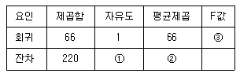
- ① = 10, ② = 22, ③ = 3
- ① = 10, ② = 220, ③ = 3.67
- ① = 11, ② = 20, ③ = 3.3
- ① = 11, ② = 220, ③ = 0.3
(정답률: 14%)
62. 행이 2, 열이 3으로 된 이원교차표를 보고 카이제곱 검증을 하려고 한다. 자유도는 얼마인가?
- 1
- 2
- 3
- 4
(정답률: 알수없음)
63. 다음은 어느 회사의 신입사원 영어시험 점수의 도수분포표이다. 세 번째 계급의 누적상대도수는?
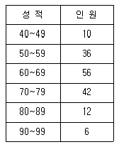
- 0.35
- 0.28
- 0.26
- 0.63
(정답률: 36%)
64. 어느 대학교 학생들을 대상으로 키, 몸무게, 혈액형, 월평균 용돈 등 4개의 변수에 대한 관측값을 얻었다. 이들변수 중 관측값들을 대표하는 측도로 최빈값(mode)을 사용하는 것이 가장 적절한 것은?
- 키
- 몸무게
- 혈액형
- 월평균 용돈
(정답률: 알수없음)
65. 중회귀분석에서 회귀계수에 대한 검정과 결정계수가 아래와 같다. 틀린 것은?
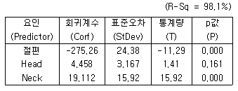
- 설명변수는 Head와 Neck이다.
- 회귀계수 중 가장 의미가 없는 변수는 절편과 Neck이다.
- 위 중회귀모형은 89.1% 자료와 적합한다.
- 회귀방정식에서 다른 요인을 고정시키고 Neck이 한단위 증가하면 반응값은 19.112가 증가한다.
(정답률: 알수없음)
66. 다음은 처리(treatment)의 각 수준별 반복수이다. 오차 변동의 자유도는?
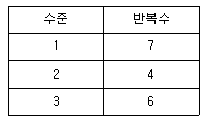
- 13
- 14
- 15
- 16
(정답률: 알수없음)
67. 독립인 정규 모집단 N ( μ1, σ1), N ( μ2, σ2)으로부터 추출한 크기, n1, n2인 표본의 평균을 X , Y라 할 때,
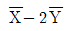
균은?- μ1-2μ2
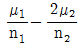

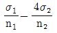
(정답률: 25%)
68. I(≥2)개의 처리를 비교하기 위하여 J(≥2)개의 블록에서 각 처리가 1회씩 실험되었다. 처리 i · 블록 j (i=1,… ,I j=1,… ,J)에서 얻은 연속형 반응을 yij 라고 할 때, 이 자료에 대한 통계적 모형으로 가장 유용한 것은?
- yij = μ + εij , εij 族 N (0,σ2) 이며 서로 독립
- yij = μ + αi + εij , εij 族 N (0,σ2) 이며 서로 독립
- yij = μ + βj + εij , εij 族 N (0,σ2) 이며 서로 독립
- yij = μ + αi + βj + εij , εij 族 N (0,σ2) 이며 서로 독립
(정답률: 알수없음)
69. 다음은 단순선형회귀모형을 추정해서 얻은 잔차(ei)에 관한 설명이다. 옳지 않은 것은? (단, 모형은 Yi=β0+β1Xi+εi 이다.)
- ∑ei=0
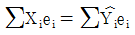
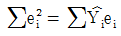
- ∑ei = ∑Xi ei
(정답률: 19%)
70. 한 회사에서 생산되는 제품이 불량품일 확률은 서로 독립적으로 0.01임을 안다. 그 회사는 1 상자에 10개씩 포장해서 판매를 하는데 만일 1 상자에 불량품이 2개 이상이면 돈을 환불해 준다. 판매된 상자가 반품될 비율은 얼마 인가?
- 약 0.6%
- 약 0.4%
- 약 0.2%
- 약 0.08%
(정답률: 20%)
71. X族N(0,1)이고
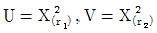
일때 T 분포와 F 분포를 옳게 표시한 것은?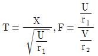
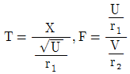
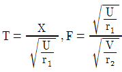
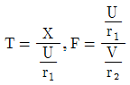
(정답률: 0%)
72. 기록에 의하면 어느 백화점 매장에서 물품을 구입 후 25%의 고객이 신용카드로 결제한다는게 알려져 있다. 오늘 40명의 고객이 이 매장에서 물건을 구입하였을 때, 몇 명의 고객이 신용카드로 결제하였을 것이라 기대되는가?
- 5명
- 8명
- 10명
- 20명
(정답률: 알수없음)
73. 다음은 중심극한의 정리(Central limit theorem)의 정의다. ( )속에 들어갈 말을 차례대로 쓰면?
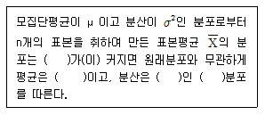
- n, μ , σ2, 표준정규
 , μ , σ2/n, 정규
, μ , σ2/n, 정규- σ2,
 , μ , 표준정규
, μ , 표준정규 - n, μ , σ2/n, 정규,
(정답률: 54%)
74. <표 A>와 <표 B>에서 행과 열의 독립성 가설을 검증(검정)하고자 한다. <표 A>에서의 카이제곱 통계량을
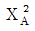
, p-값(유의확률)을 pA 이라고 하고 <표 B>에서의 카이제곱 통계량을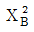
, p-값(유의확률)을 pB 라고 하자. 다음 중 맞는 것은?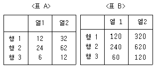
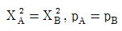
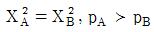
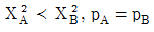
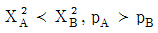
(정답률: 20%)
75. 단순회귀분석을 위하여 수집한 자료 10개에 대하여 다음의 요약된 값을 얻었다. 최소제곱법에 의하여 추정된 회귀직선은?
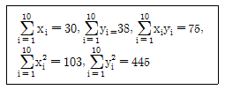
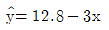
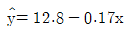
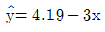
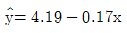
(정답률: 23%)
76. Y의 X에 대한 회귀직선식이
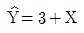
이라 한다. Y의 표준편차는 5, X의 표준편차가 3이라 할 때 Y와 X의 상관계수는?- 0.6
- 1
- 0.8
- 0.5
(정답률: 알수없음)
77. 어느 지역의 가구당 월평균 소득은 250(만원)이고, 분산은 25(만원)이라고 한다. 이 지역에서 50가구를 무작위로 추출하여 구한 표본평균을 X라고 할 때, 다음 중 근사적으로 확률 P(a嗾
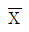
嗾b)를 가장 크게하는 a, b 값은?- a=245, b=255
- a=240, b=250
- a=250, b=260
- a=248, b=258
(정답률: 50%)
78. 다음은 가설검정에 관한 설명이다. 옳은 것은?
- 검정통계량은 확률변수이다.
- 대립가설은 사전에 알고 있는 값이다.
- 유의수준 α 를 작게할수록 좋은 검정법이다.
- 가설이 틀렸을 때 틀렸다고 판정할 확률을 유의수준이라 한다.
(정답률: 10%)
79. 회귀분석을 수행하는데 필요한 가정이 아닌 것은?
- 독립성(independence)
- 불편성(unbiasedness)
- 정규성(normality)
- 등분산성(homoscedasticity)
(정답률: 알수없음)
80. 부산시가 전국도시에 비해 주택보급율과 도로율 중 어떤 것이 더 열악한가를 파악하려고 한다. 무엇을 이용하는 것이 가장 바람직한가?
- 표준편차
- 변동계수
- 평균
- 표준점수(Z점수)
(정답률: 20%)
81. 이항분포의 정규근사에 대한 설명으로 틀린 것은?
- 표본의 크기가 충분히 큰 경우에 적용된다.
- 이항분포에서 성공확률이 1/2 에 가까울수록 정확도가 뛰어나다.
- 연속성 수정을 실시하면 그렇지 않은 경우보다 항상 정확하다.
- 연속성 수정시 고려되는 상수값은 1 또는 -1 이다.
(정답률: 25%)
82. 다음 결합확률밀도함수의 상관계수는 얼마인가?
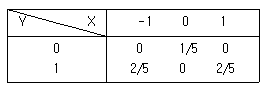
- 0
- -1
- 1
- 1/2
(정답률: 알수없음)
83. 통계조사시 한 가구를 조사하는데 소요되는 시간을 측정하기 위하여 64가구를 임의 추출하여 조사한 결과 평균 소요시간이 30분, 표준편차 5분이었다. 전체 가구를 조사하는데 소요되는 평균시간에 대한 95%의 신뢰구간은 얼마인가? (단, Ｚ0.025=1.96, Ｚ0.⑤=1.645)
- 28.8, 31.2
- 28.4, 31.6
- 29.0, 31.0
- 28.5, 31.5
(정답률: 알수없음)
84. 확률변수 X의 분포가 자유도가 각각 a 와 b인 F(a,b) 를 따른다면 확률변수 Y=1/X의 분포는 무엇인가?
- F(a,b)
- F(1/a,1/b)
- F(b,a)
- F(1/b,1/a)
(정답률: 36%)
85. 다음 중 산포도의 측도가 아닌 것은?
- 사분위 편차
- 왜도
- 범위
- 분산
(정답률: 24%)
86. 어느 회사에 출퇴근하는 직원들 500명을 대상으로 이용하는 교통수단을 지하철, 자가용, 버스, 택시, 지하철과 택시, 지하철과 버스, 기타의 분야로 나누어 조사하였다. 이 자료를 정리하기에 적당하지 않은 것은?
- 도수분포표
- 막대그래프
- 원형그래프
- 히스토그램
(정답률: 알수없음)
87. 기술통계치와 관련된 다음 진술들 가운데 잘 못 된 것은?
- 자료가 왼쪽으로 치우쳐진(skewed) 경우에 중앙값은 평균보다 더 작은 경향이 있다.
- 종모양의 완벽한 대칭적 분포에서 평균, 중앙값, 최빈값은 동일한 값을 갖는다.
- 평균과 중앙값이 모든 경우 단일값을 갖는데 비해 최빈값은 하나 이상이 될 수 있다.
- 평균과 중앙값, 최빈값 모두 측정수준이 서열변수 이상인 경우에만 정의될 수 있다.
(정답률: 54%)
88. 상관계수에 대한 설명이다. 옳은 것으로 짝지은 것은?
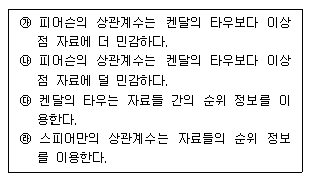
- ㉮,㉰
- ㉮,㉱
- ㉯,㉰
- ㉯,㉱
(정답률: 34%)
89. 20대 성인 여자의 키의 분포가 정규분포를 따르고 평균값은 160㎝이고 표준편차는 10㎝라고 할 때, 임의의 여자의 키가 175㎝보다 클 확률은 얼마인가? (아래의 표준정규분포의 누적확률표(일부)를 참고)
- 0.0668
- 0.0808
- 0.9332
- 0.9192
(정답률: 알수없음)
90. 유의확률(p-value)의 설명 중 틀린 것은?
- 검정통계량이 실제 관측된 값보다 대립가설을 지지하는 방향으로 더욱 치우칠 확률로서 귀무가설 H0하에서 계산된 값이다.
- 주어진 데이터와는 직접적으로 관계가 없다.
- 유의확률이 작을수록 H0에 대한 반증이 강한 것을 뜻 한다.
- 귀무가설 H0에 대한 반증의 강도에 대하여 기준값을 미리 정해놓고 p-값을 그 기준값과 비교한다.
(정답률: 39%)
91. 다음 중 상관분석의 적용을 위해 산점도(scatter plot)에서 관찰해야 하는 자료의 특징이 아닌 것은?
- 선형(linear) 또는 비선형(nonlinear) 관계의 여부
- 이상점의 존재 여부
- 자료의 층화 여부
- 원점 (0,0)의 통과 여부
(정답률: 알수없음)
92. 미국에서는 얼마전 인종간의 지적 능력의 근본적 차이를 강조하는 종모양 곡선(Bell Curve)이라는 책이 논란을 불러일으켰다. 만약 흑인과 백인의 지능지수의 차이를 비교 하고자 한다면 어떤 검정도구를 사용하는 것이 가장 적합하겠는가?
- 카이자승 검정
- t-검정
- F-검정
- Z-검정
(정답률: 10%)
93. 성과 정당지지도 사이에 관계가 있는가?愾를 살펴보기 위하여 설문조사를 실시하였다. 분석한 결과, Pearson 카이제곱 값이 32.29, 자유도가 2, 유의확률이 0.000이었다. 이러한 분석에 근거할 때, 유의수준 0.⑤에서 "성과 정당 지지도 사이의 관계"에 대한 결론은?
- 위에 제시한 통계량으로는 성과 정당지지도 사이의 관계를 알 수 없다.
- 성과 정당지지도 사이에 유의미한 관계가 있다.
- 성과 정당지지도 사이에 유의미한 관계가 없다.
- 남성이 여성보다 정당지지도가 높다.
(정답률: 29%)
94. 모집단의 표준편차 σ 를 알고있는 경우 μ 에 대한 신뢰구간은
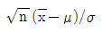
가 정규분포를 따른다는 사실에 의해 구해진다. 또 한 모집단의 표준편차 σ 를 모르는 경우는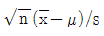
(s : 표본표준편차)가 자유도가 (n-1)인 t 분포임을 이용한다. 이 때 표본크기가 5인 경우 E(s)=0.94σ 가 된다면 σ 를 모르는 경우, 아는 경우에 비해 어느정도나 95% 신뢰구간의 크기가 증가하는가? (단, z0.025 =1.96, t0.025,4=2.78)- 약 13%
- 약 33%
- 약 25%
- 약 11%
(정답률: 9%)
95. 표본크기에 대한 설명으로 틀 린 것은?
- 가설검증에서 오진을 줄이기 위한 것과 표본크기와는 관련이 없다.
- 다른 조건은 일정하다면, 표본의 크기가 클수록 평균의 표본오차는 더 작아진다.
- 표본이 클수록 진실한 가설을 기각할 가능성은 더 작아진다.
- 모집단이 동질적일수록 표본의 크기는 적어진다.
(정답률: 알수없음)
96. 다중회귀분석에서 독립변수의 수가 지나치게 많을 경우의 부작용이 아닌 것은?
- 설명력의 증가가 현저히 줄어든다.
- 추정치의 표준오차는 커진다.
- 회귀식의 적합도나 타당도가 낮아진다.
- 종속변수에 대한 독립변수의 상대적 영향력의 비교가 곤란하다.
(정답률: 알수없음)
97. 다음의 상황에 알맞은 검정방법은?
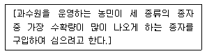
- 독립표본 t-검정
- 대응표본 t-검정
- X2-검정
- F -검정
(정답률: 알수없음)
98. X 가 N (μ , σ2) 인 분포를 따를 경우 Y = aX + b 의 분포는?
- 중심극한 정리에 의하여 표준정규분포 N (0, 1)
- a 와 b 의 값에 관계없이 N (μ , σ2)
- N (aμ+b, a2σ2+b )
- N (aμ+b, a2σ2)
(정답률: 알수없음)
99. 결정계수(coefficient of determination) R 2 에 대한 설명으로 틀 린 것은?
- 총제곱의 합 중 설명된 제곱의 합의 비율을 뜻한다.
- 종속변수에 미치는 영향이 적은 독립변수가 추가된다면 결정계수는 변하지 않는다.
- R2 값이 클수록 회귀선으로 실제 관찰치를 예측하는데 정확성이 높아진다.
- 독립변수와 종속변수간의 표본상관계수 r의 제곱값과 같다.
(정답률: 34%)
100. 다음 중 연속확률변수가 아 닌 것은?
- 사람의 체중
- 불량품 갯수
- 전기사용 시간
- 곡물의 무게
(정답률: 알수없음)